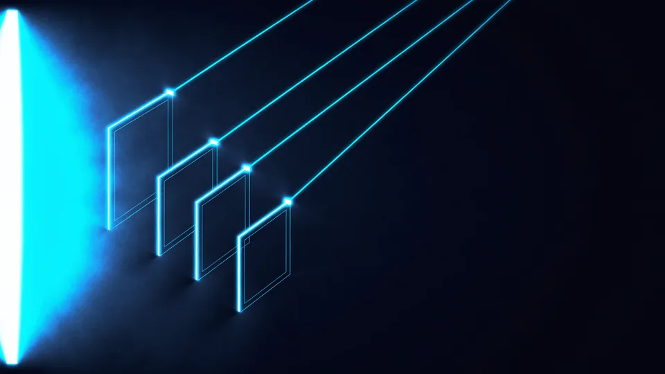

Reklam Filmi Çekimi Hangi Aşamalardan Geçer?
Beş aşama vardır: ön hazırlık, çekim, kurgu, renk ve ses, teslim. Süreyi aşama sayısı değil, ön hazırlığı ne kadar sıkı tuttuğunuz belirler. Reklam filmi çekimi bir gün sürer ama o günü hazırlayan iş haftalar alır. Set kurulduktan sonra verilen her karar pahalıdır.
Aşamaları bir çizgi gibi düşünmek yanıltır. Müzik arayışı ön hazırlıkta başlar, montaj sırasında sürer. Teslim biçimleri ise senaryo yazılırken belli olmalıdır; sonradan öğrenilen bir mecra, kadraj kararlarını çöpe atar.
Aşağıdaki sıra bizim yürüttüğümüz düzendir.
- Ön hazırlık — senaryo, storyboard, mekân, oyuncu, çekim listesi.
- Çekim — set kurulumu, planların alınması, yedek kareler.
- Montaj — kaba kurgu, revizyon turları, ince kurgu.
- Renk ve ses — renk düzeltme, seslendirme, müzik, karışım.
- Teslim — mecra başına oran, süre ve altyazı sürümleri.
Toplam Süre Ne Kadar Tutar?
Dar kapsamlı bir işte dört ila altı hafta makul bir hedeftir. Oyuncu, birden çok mekân ve özel efekt girdiğinde iki aya doğru genişler. Çekim gününde reklam filminin ne kadarının çekileceği bu takvimi doğrudan belirler.
Ön Hazırlıkta Ekip Neleri Kesinleştirir?
Bu aşama, senaryodan çekim listesine kadar her şeyi kâğıda döker. Mekân, oyuncu, ışık planı ve çekim sırası burada kesinleşir. Bir de storyboard çıkar; kareyi sette değil masada tartışmak için. Reklam filmi çekimine hazırlıksız girmek, en pahalı tasarruf yöntemidir. Bu aşama iki ila dört hafta sürer.
Prodüksiyon öncesi çalışma sıkıcı görünür ve ilk kısılan kalem olur. Oysa sette geçen bir saat, masada geçen bir güne bedeldir. Ekip, oyuncu ve mekân aynı anda beklerken alınan kararlar hem hızlı hem kötü olur.
Storyboard bu aşamanın en görünür çıktısıdır; ne işe yaradığını storyboard yazısında anlattık. Ne işe yaradığını reklam metni yazma yazısındaki mesaj kurgusuyla birlikte düşünmek de yararlı olur; görüntü ile metin aynı anda oturur. Mecra kuralları çekimden önce bilinmeli; RTÜK’ün yayın ilkeleri süre ve içerik sınırı koyar.
Çekim Listesi Neden Bu Kadar Önemli?
Çünkü set saatle işler. Liste, hangi planın hangi sırayla çekileceğini gösterir ve ışık kurulumlarını gruplar. Listesiz bir gün, aynı kurulumu üç kez yapmakla geçer.
Çekim Günü Nasıl İlerler?
Gün, çekim listesine göre yürür; hikâye sırasına göre değil. Aynı çekim yerinde geçen planları art arda alırız, sonra ışık kurulumu değişir. Oyunculu işlerde provalar sabah biter. Reklam filmi çekimi genelde tek güne sığar ama gün on saatten kısa olmaz. Fazla plan sığdırmak, gün sonunda kaliteyi düşürür.
Sabah kurulumla başlar, ilk plan genelde öğleye doğru düşer. Öğleden sonra tempo artar; ekip kurulumu tanıdıkça hızlanır. Son iki saat en verimli saatlerdir, o yüzden zor planları oraya koymayız.
Yedek kare almak da günün parçasıdır. Aynı planın biraz geniş ve biraz dar hâli, montajda elinizi rahatlatır. Bu birkaç dakikalık iş, sonradan yeniden çekime gitmenizi engeller.
Günün akışını hava ve ışık da belirler. Dış mekânda çalışıyorsanız altın saatler kısa ve pahalıdır; o planları en başa koyarız. Çekimden önce reklam fikrinin hangi ışıkta yaşayacağına karar vermek, gün içinde saat kazandırır.
Set Kararı Neden Pahalı?
Çünkü o anda herkes beklemededir. Ekip, ekipman ve mekân aynı saati harcar. Masada beş dakikada verilen bir karar, sette elli kat pahalıya gelir.
Kurgu ve Renk Aşaması Ne Kadar Sürer?
Montaj bir ila iki hafta alır, revizyon turları buna dahildir. Renk ve ses ayrı bir aşamadır ve genelde birkaç gün sürer. Müzik lisansı beklenmedik biçimde uzayabilir; onu erken başlatırız. Reklam filmi çekimi bittiğinde iş bitmez, ikinci yarısı masada geçer. Revizyon sayısını sözleşmede sabitlemek iki tarafı da rahatlatır.
İlk teslim kaba kurgudur ve müziksiz gelir. Amacı ritmi tartışmaktır, güzelliği değil. Bu aşamada verilen yapısal yorumlar kolay uygulanır; ince kurgudan sonra aynı yorum çok daha pahalıya gelir.
Renk düzeltme markanın tonunu belirler. Aynı görüntü sıcak ya da soğuk bir renkle bambaşka bir duygu verir. Ses tarafında ise müzik, seslendirme ve efekt karışımını ayrı ayrı çalışırız.
Yorum verirken zaman damgası kullanın. “Şu sahne uzun” demek yetmez. “00:12'deki plan iki saniye kısalsın” demek bir turu tek başına kısaltır. Dağınık yorumlar montajcıyı tahmine zorlar; tahmin de yeni bir tur doğurur.
Kaç Revizyon Turu Normaldir?
İki tur olağandır. Üçüncü tur dönüyorsa sorun montajda değil, ön hazırlıkta kalmış bir karardadır. O zaman bir adım geri gider, neyi anlatmak istediğimizi yeniden konuşuruz.
“Masada beş dakikada verilen karar, sette elli kat pahalıya gelir. Ön hazırlık bir gider kalemi değil, en yüksek getirili yatırımdır.”
— TasarımMania prodüksiyon notu
Teslimden Önce Neleri Kontrol Ederiz?
Çıktı tek bir dosya değildir. Yayınlanacağı her mecra için ayrı en boy oranı, ayrı süre ve ayrı altyazı çıkarırız. Sessiz izlenen mecralarda altyazı zorunludur, tercih değil. Reklam filmi çekiminden çıkan görüntü aynıdır ama teslim paketi mecraya göre değişir. Bu paketi baştan konuşmak, sonradan yapılan yeniden kurguyu önler.
Dikey, kare ve yatay oranlar farklı kadraj ister. Yatay çekilmiş bir plan dikeye kırpıldığında ürün çoğu zaman kadraj dışında kalır. Bu yüzden çekim sırasında hangi oranların gerekeceğini bilmemiz gerekir.
Süre de mecraya göre değişir. Aynı hikâyenin altı saniyelik ve otuz saniyelik sürümleri ayrı ayrı kurgulanır. Mecra seçimini sosyal medya reklam yönetimi yazısında ele almıştık.
Dosya adlandırması da küçük ama kritik bir ayrıntı. Mecra, oran ve süre bilgisini ada yazarsanız yayın günü kimse yanlış dosyayı yüklemez. Bu alışkanlık, ajans ile medya ekibi arasındaki en sık hatayı ortadan kaldırır.
Projenizin Takvimini Birlikte Çıkaralım
Takvimi kapsamla birlikte çıkarırız. Kaç plan, kaç mekân, oyuncu var mı, hangi mecralara teslim vereceğiz: bu dördü netleşince tarih de netleşir. Elinizde tahmini bir süre değil, aşama aşama bir plan kalıyor. Reklam filmi çekimi için gün ayırmadan önce bu planı görmek işinizi kolaylaştırır.
Görsel üretimin diğer kollarıyla ortak planlamak da bütçenizi korur; ürün görselleriyle ilgili yaklaşımı ürün fotoğrafları yazısında anlattık. Reklam filmi hizmetimizi ve video prodüksiyon sayfamızı inceleyebilirsiniz. Bütçeyi hangi kalemlerin hareket ettirdiğini fiyat kalemleri yazısında açtık.
Planı çıkarırken üç tarihi işaretleriz: storyboard onayı, çekim günü ve ilk kurgu teslimi. Bu üçü tutarsa geri kalanı kendiliğinden tutar. En çok kayan tarih ilkidir; storyboard onayı geciktiğinde her şey birlikte kayar.

Aşamalar, çıktıları ve kritik kararlar
| Aşama | Çıktısı | Burada verilmezse pahalıya gelen karar |
|---|---|---|
| Ön hazırlık | Senaryo, storyboard, çekim listesi | Kadraj ve mekân |
| Çekim | Ham görüntüler ve yedek kareler | Plan sayısı ve oran |
| Montaj | Kaba kurgu, ardından ince kurgu | Ritim ve hikâye sırası |
| Renk ve ses | Ton düzeltme, müzik, karışım | Marka tonu |
| Teslim | Mecra başına ayrı sürümler | Altyazı ve süre |
Reklam filmi çekimi beş aşamadan geçer ve bunların yalnız biri kamera önünde yaşanır. Takvimi belirleyen şey çekim günü değil, ön hazırlıkta kapatılan karar sayısıdır; sette açık kalan her soru hem zamanı hem bütçeyi büyütür.